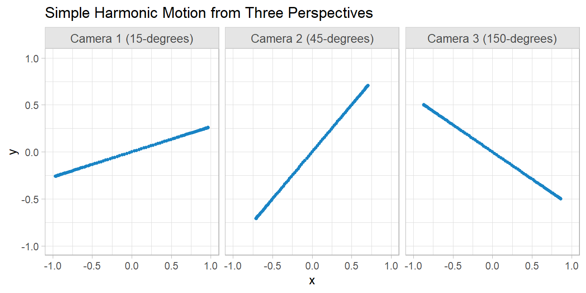
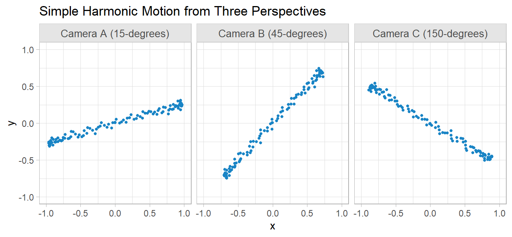
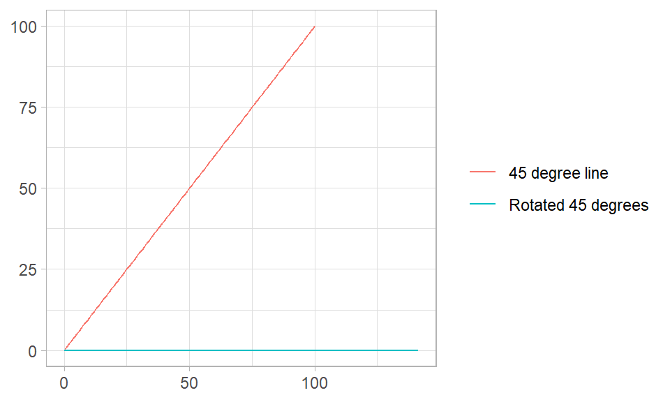
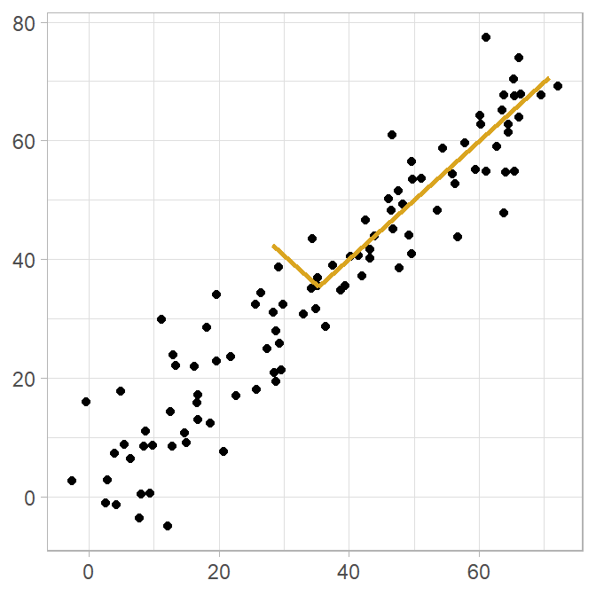
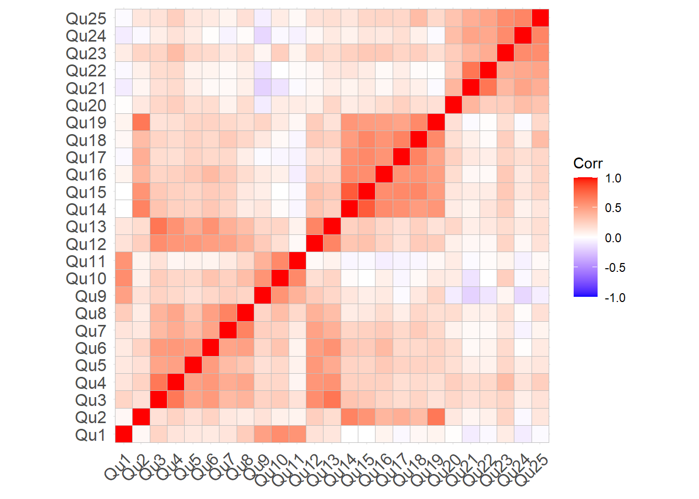
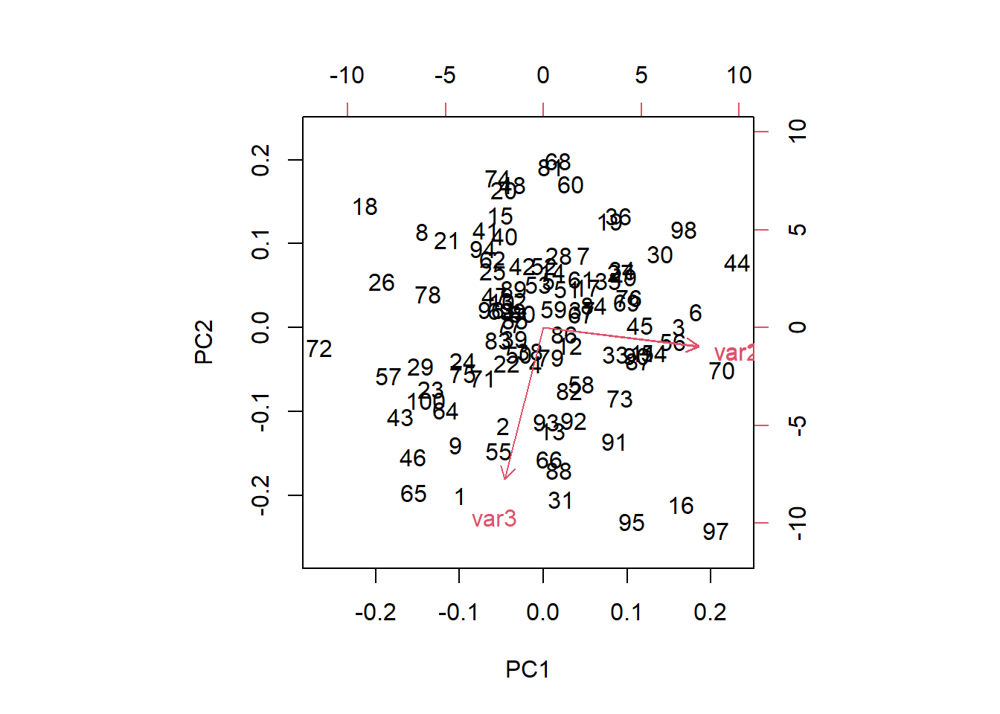

library(tidyverse)2 PCA
Machine learning datasets often have an enormous number of columns, many of which are correlated because they essentially measure the same latent construct. You could drop redundant columns, but sometimes the redundancy is not obvious, hidden in combinations of columns. Principle components analysis (PCA) reduces the number of columns to a few, interpretable linear combinations while retaining as much information as possible.1
No special packages for this section, just load the tidyverse.
2.1 Intuition and Matrix Algebra
Shlens (2014) introduces PCA with an intuitive toy example where the movement of an oscillating spring is monitored by cameras from three positions in a room. Each camera produces a dataset of x and y coordinates, six vectors of numbers altogether, but the physical reality is there is only one dimension of movement. PCA should be able to reduce the six vectors into a single principle component.
I’ll simplify this even more. The three cameras are all located at x = 0, y = 0, but are rotated 15 degrees, 45 degrees, and 150 degrees respectively. From the cameras’ perspectives, the oscillation occurs in different directions.
Show the code
# 100 photos of the end of the spring taken over 10s of motion.
t <- seq(0, 10, length.out = 100)
# simple harmonic motion from our perspective: 0-degree rotation.
x_0 <- sin(2 * pi * 0.5 * t)
y_0 <- rep(0, length(t))
coords_0 <- matrix(c(x_0, y_0), ncol = 2)
# 15-degree rotation matrix for camera 1
theta_1 = pi * (1 / 12)
M_1 <- matrix(c(cos(theta_1), -sin(theta_1), sin(theta_1), cos(theta_1)), nrow = 2)
coords_1 <- coords_0 %*% M_1
# 45-degree rotation matrix for camera 2
theta_2 = pi * (1 / 4)
M_2 <- matrix(c(cos(theta_2), -sin(theta_2), sin(theta_2), cos(theta_2)), nrow = 2)
coords_2 <- coords_0 %*% M_2
# 150-degree rotation matrix for camera 3
theta_3 = pi * (5 / 6)
M_3 <- matrix(c(cos(theta_3), -sin(theta_3), sin(theta_3), cos(theta_3)), nrow = 2)
coords_3 <- coords_0 %*% M_3
# Combined dataset
spring <- tibble(
camera_1_x = coords_1[, 1],
camera_1_y = coords_1[, 2],
camera_2_x = coords_2[, 1],
camera_2_y = coords_2[, 2],
camera_3_x = coords_3[, 1],
camera_3_y = coords_3[, 2]
)
pca <- prcomp(spring, center = TRUE, scale. = TRUE)
# Summary of PCA
summary(pca)Importance of components:
PC1 PC2 PC3 PC4 PC5 PC6
Standard deviation 2.449 2.249e-16 1.247e-16 7.428e-17 6.475e-17 3.57e-17
Proportion of Variance 1.000 0.000e+00 0.000e+00 0.000e+00 0.000e+00 0.00e+00
Cumulative Proportion 1.000 1.000e+00 1.000e+00 1.000e+00 1.000e+00 1.00e+00# Biplot of PCA
biplot(pca)
cameras set up along three axes \(\{ \vec{a}, \vec{b}, \vec{c} \}\). That’s more dimensional data than you need! PCA reveals the hidden structure in your noisy data: \(\vec{x}\) is the important dimension.
Your dataset consists of 72,000 rows photos: 120 photos taken per second for 10 minutes The columns are the x- and y- coordinates measured from each camera. Each row of data may be expressed as a column vector, \(\vec{X}\).
\[ \vec{X} = \begin{bmatrix} x_A \\ y_A \\ x_B \\ y_B \\ x_C \\ y_C \end{bmatrix} \]
\(\vec{X}\) is an m = 6-dimensional vector. Equivalently, \(\vec{X}\) lies in an m-dimensional vector space spanned by some orthonormal basis. The orthonormal basis for each camera is \(\{(1,0), (0,1)\}\) from its own perspective, so a data point from camera \(A\) might equivalently be expressed as
\[ \begin{bmatrix} 1 & 0 \\ 0 & 1 \end{bmatrix} \begin{bmatrix} x_A \\ y_A \end{bmatrix} \]
Note on Orthonormal Bases
An orthonormal basis is any set of vectors whose pairwise inner products are zero. The orthonormal basis for camera \(A\) might be \(\{(\sqrt{2}/2,\sqrt{2}/2), (-\sqrt{2}/2,\sqrt{2}/2)\}\) from a neutral perspective. From the neutral perspective, you would have to rotate the axes 45 degrees.
# M is a 45-degree line
M <- matrix(c(0:100, 0:100 * tan(45*(pi/180))), ncol = 2)
colnames(M) <- c("X", "Y")
# M is unchanged after multiplication by identity matrix.
I <- matrix(c(1, 0, 0, 1), nrow = 2)
M1 <- M %*% I
colnames(M1) <- colnames(M)
# Rotate M 45-degrees.
B <- matrix(c(sqrt(2)/2, sqrt(2)/2, -sqrt(2)/2, sqrt(2)/2), nrow = 2)
M2 <- M %*% B
colnames(M2) <- colnames(M)
bind_rows(
`45 degree line` = as_tibble(M1),
`Rotated 45 degrees` = as_tibble(M2),
.id = "series"
) |>
ggplot(aes(x = X, y = Y, color = series)) +
geom_line() +
labs(x = NULL, y = NULL, color = NULL)
Extending this idea to the entire sample of three cameras, you might start by naively assuming the three cameras collect data from the same perspective, taking each measurement at face value. The set of orthonormal basis vectors, \(\textbf{B}\) would look like this identity matrix
\[ \textbf{B} = \begin{bmatrix} b_1 \\ b_2 \\ \vdots \\ b_m \end{bmatrix} = \begin{bmatrix} 1 & 0 & \cdots & 0 \\ 0 & 1 & \cdots & 0 \\ \vdots & \vdots & \ddots & \vdots \\ 0 & 0 & \cdots & 1 \end{bmatrix} \]
where \(b_1\) and \(b_2\) are the bases used by camera \(A\), etc. Now the data set \(\textbf{X}\) can be expressed as the matrix multiplication, \(\textbf{BX}\). This added complexity allows you to ask whether another basis, \(\textbf{P}\), that is a linear combination of the original basis, better expresses the data set, \(\textbf{PX} = \textbf{Y}\). The linear restriction is a key simplifying assumption of PCA. \(\textbf{P}\) transforms \(\textbf{X}\) into \(\textbf{Y}\), but you can also think of it as rotating and stretching \(\textbf{X}\) into \(\textbf{Y}.\)
The goal of PCA is to maximize variance (the signal-to-noise ratio) and minimize covariance (redundancy). The signal-to-noise ratio is \(SNR = \sigma^2_{signal} / \sigma^2_{noise}\). In each camera’s 2D perspective, the signal is the amplitude of the movement of the spring along the x-axis and the noise is the movement along the y-axis. Looking at the raw (un-rotated) data from camera \(A\), you might guess the spring dynamics occur in the direction yielding the highest SNR, the 45-degree rotation.

The other criteria is redundancy. There are three cameras recording the same activity, so they are perfectly correlated. If \(\textbf{X}\) is an \(m \times n\) matrix of centered values (subtracting the mean), PCA will find an orthonormal matrix \(\textbf{P}\) in \(\textbf{Y} = \textbf{PX}\) such that the covariance matrix \(\textbf{C}_\textbf{Y} = \frac{1}{n}\textbf{YY}^T\) is a diagonal matrix. The rows of \(\textbf{P}\) are the principal components of \(\textbf{X}\).
The process is to select a normalized direction in m-dimensional space which maximizes the \(\textbf{X}\) variance. Save this vector as \(\textbf{p}_1\). Next find a second direction along which variance is maximized, but restrict the search to directions that are orthogonal to the previous direction. Save this vector as \(\textbf{p}_2\). Repeat until all m vectors are selected. The resulting ordered set of \(\textbf{p}\)’s are the principal components.
With matrix algebra, you can express \(\textbf{C}_\textbf{Y}\) in terms of the covariance matrix of \(\textbf{X}\), \(\textbf{C}_\textbf{X}\).
\[ \begin{align} \textbf{C}_\textbf{Y} &= \frac{1}{n}\textbf{YY}^T \\ &= \frac{1}{n}(\textbf{PX})(\textbf{PX})^T \\ &= \frac{1}{n}\textbf{PXX}^T\textbf{P}^T \\ &= P\left(\frac{1}{n}\textbf{XX}^T\right)\textbf{P}^T \\ &= \textbf{PC}_\textbf{X}\textbf{P}^T \end{align} \]
Any symmetric matrix can be diagonalized by an orthogonal matrix of its eigenvectors, \(\textbf{C}_\textbf{X} = \textbf{E}^T\textbf{DE}\). So select \(\textbf{P}\) to be such a matrix.
\[ \begin{align} \textbf{C}_\textbf{Y} &= \textbf{PC}_\textbf{X}\textbf{P}^T \\ &= \textbf{P}(\textbf{E}^T\textbf{DE})\textbf{P}^T \\ &= \textbf{P}(\textbf{P}^T\textbf{DP})\textbf{P}^T \\ &= (\textbf{PP}^T)\textbf{D}(\textbf{PP}^T) \\ &= (\textbf{PP}^{-1})\textbf{D}(\textbf{PP}^{-1}) \\ &= \textbf{D} \end{align} \]
2.2 Case Study
Let’s work with a case study presented by Laerd.
pca_dat <-
foreign::read.spss("./input/pca.sav", to.data.frame = TRUE) |>
mutate(
across(where(is.factor), ~factor(., levels = likert_scale, ordered = TRUE))
)
glimpse(pca_dat)Rows: 315
Columns: 30
$ Qu1 <ord> Agree Somewhat, Disagree, Disagree Somewhat, Undecided, Undecid…
$ Qu2 <ord> Undecided, Strongly Agree, Agree, Disagree, Disagree, Disagree,…
$ Qu3 <ord> Undecided, Agree, Agree Somewhat, Agree, Agree, Agree Somewhat,…
$ Qu4 <ord> Undecided, Agree, Agree, Disagree, Disagree, Agree Somewhat, Ag…
$ Qu5 <ord> Undecided, Agree, Agree Somewhat, Disagree Somewhat, Disagree S…
$ Qu6 <ord> Undecided, Agree Somewhat, Agree Somewhat, Disagree, Disagree, …
$ Qu7 <ord> Undecided, Agree Somewhat, Agree, Disagree Somewhat, Disagree S…
$ Qu8 <ord> Undecided, Agree Somewhat, Agree Somewhat, Disagree, Disagree, …
$ Qu9 <ord> Agree Somewhat, Agree Somewhat, Disagree Somewhat, Undecided, U…
$ Qu10 <ord> Undecided, Agree Somewhat, Disagree Somewhat, Disagree, Disagre…
$ Qu11 <ord> Agree Somewhat, Agree Somewhat, Disagree Somewhat, Agree Somewh…
$ Qu12 <ord> Strongly Agree, Agree, Agree, Agree, Agree, Agree, Agree, Agree…
$ Qu13 <ord> Undecided, Agree, Agree, Strongly Agree, Strongly Agree, Agree,…
$ Qu14 <ord> Undecided, Agree, Agree Somewhat, Agree Somewhat, Agree Somewha…
$ Qu15 <ord> Undecided, Agree, Agree, Agree Somewhat, Agree Somewhat, Agree …
$ Qu16 <ord> Undecided, Agree, Agree Somewhat, Undecided, Undecided, Disagre…
$ Qu17 <ord> Undecided, Agree, Agree Somewhat, Undecided, Undecided, Agree S…
$ Qu18 <ord> Undecided, Agree Somewhat, Agree, Agree Somewhat, Agree Somewha…
$ Qu19 <ord> Agree Somewhat, Strongly Agree, Agree, Disagree, Disagree, Disa…
$ Qu20 <ord> Undecided, Agree, Agree Somewhat, Disagree Somewhat, Disagree S…
$ Qu21 <ord> Undecided, Strongly Agree, Agree Somewhat, Agree, Agree, Strong…
$ Qu22 <ord> Undecided, Agree Somewhat, Agree Somewhat, Agree Somewhat, Agre…
$ Qu23 <ord> Undecided, Strongly Agree, Agree Somewhat, Agree Somewhat, Agre…
$ Qu24 <ord> Undecided, Agree, Agree Somewhat, Agree, Agree, Agree, Undecide…
$ Qu25 <ord> Undecided, Strongly Agree, Agree Somewhat, Agree Somewhat, Agre…
$ FAC1_1 <dbl> -0.31985907, -1.85802269, -1.36495416, 0.02235922, 0.02235922, …
$ FAC2_1 <dbl> -0.6366505, -1.5727256, -1.6357254, -0.6846857, -0.6846857, -1.…
$ FAC3_1 <dbl> 0.825818943, -1.576466472, -0.125140607, -0.576649155, -0.57664…
$ FAC4_1 <dbl> -1.4492270, -0.9594769, 0.3063403, -0.3991595, -0.3991595, 1.60…
$ FAC5_1 <dbl> -0.03960671, -0.03584510, -0.80707018, 1.59287496, 1.59287496, …315 job candidates complete a questionnaire consisting of 25 questions using a 7-level Likert scale. Questions focused on motivation, dependability, enthusiasm, and commitment.
gt_items(c("Qu3", "Qu4", "Qu5", "Qu6", "Qu7", "Qu8", "Qu12", "Qu13"))| Characteristic | Strongly Agree N = 301 |
Agree N = 1361 |
Agree Somewhat N = 4061 |
Undecided N = 7261 |
Disagree Somewhat N = 7691 |
Disagree N = 2061 |
Strongly Disagree N = 2471 |
|---|---|---|---|---|---|---|---|
| Qu3 | 1 (0.3%) | 19 (6.0%) | 54 (17%) | 97 (31%) | 94 (30%) | 27 (8.6%) | 23 (7.3%) |
| Qu4 | 1 (0.3%) | 12 (3.8%) | 53 (17%) | 106 (34%) | 91 (29%) | 25 (7.9%) | 27 (8.6%) |
| Qu5 | 1 (0.3%) | 19 (6.0%) | 61 (19%) | 88 (28%) | 102 (32%) | 23 (7.3%) | 21 (6.7%) |
| Qu6 | 3 (1.0%) | 13 (4.1%) | 45 (14%) | 102 (32%) | 104 (33%) | 25 (7.9%) | 23 (7.3%) |
| Qu7 | 4 (1.3%) | 11 (3.5%) | 42 (13%) | 99 (31%) | 90 (29%) | 37 (12%) | 32 (10%) |
| Qu8 | 7 (2.2%) | 7 (2.2%) | 42 (13%) | 68 (22%) | 119 (38%) | 42 (13%) | 30 (9.5%) |
| Qu12 | 1 (0.3%) | 26 (8.3%) | 44 (14%) | 76 (24%) | 83 (26%) | 16 (5.1%) | 69 (22%) |
| Qu13 | 12 (3.8%) | 29 (9.2%) | 65 (21%) | 90 (29%) | 86 (27%) | 11 (3.5%) | 22 (7.0%) |
| 1 n (%) | |||||||
gt_items(c("Qu2", "Qu14", "Qu15", "Qu16", "Qu17", "Qu18", "Qu19"))| Characteristic | Strongly Agree N = 491 |
Agree N = 1851 |
Agree Somewhat N = 4301 |
Undecided N = 6281 |
Disagree Somewhat N = 5531 |
Disagree N = 2671 |
Strongly Disagree N = 931 |
|---|---|---|---|---|---|---|---|
| Qu2 | 15 (4.8%) | 31 (9.8%) | 51 (16%) | 79 (25%) | 69 (22%) | 51 (16%) | 19 (6.0%) |
| Qu14 | 2 (0.6%) | 31 (9.8%) | 53 (17%) | 101 (32%) | 85 (27%) | 30 (9.5%) | 13 (4.1%) |
| Qu15 | 4 (1.3%) | 26 (8.3%) | 67 (21%) | 92 (29%) | 80 (25%) | 33 (10%) | 13 (4.1%) |
| Qu16 | 7 (2.2%) | 25 (7.9%) | 66 (21%) | 77 (24%) | 90 (29%) | 39 (12%) | 11 (3.5%) |
| Qu17 | 12 (3.8%) | 29 (9.2%) | 80 (25%) | 94 (30%) | 71 (23%) | 24 (7.6%) | 5 (1.6%) |
| Qu18 | 5 (1.6%) | 33 (10%) | 69 (22%) | 97 (31%) | 73 (23%) | 25 (7.9%) | 13 (4.1%) |
| Qu19 | 4 (1.3%) | 10 (3.2%) | 44 (14%) | 88 (28%) | 85 (27%) | 65 (21%) | 19 (6.0%) |
| 1 n (%) | |||||||
gt_items(c("Qu20", "Qu21", "Qu22", "Qu23", "Qu24", "Qu25"))| Characteristic | Strongly Agree N = 1071 |
Agree N = 3081 |
Agree Somewhat N = 5621 |
Undecided N = 4921 |
Disagree Somewhat N = 3721 |
Disagree N = 281 |
Strongly Disagree N = 211 |
|---|---|---|---|---|---|---|---|
| Qu20 | 8 (2.5%) | 37 (12%) | 74 (23%) | 83 (26%) | 87 (28%) | 17 (5.4%) | 9 (2.9%) |
| Qu21 | 20 (6.3%) | 67 (21%) | 103 (33%) | 63 (20%) | 60 (19%) | 0 (0%) | 2 (0.6%) |
| Qu22 | 23 (7.3%) | 68 (22%) | 114 (36%) | 59 (19%) | 49 (16%) | 0 (0%) | 2 (0.6%) |
| Qu23 | 16 (5.1%) | 46 (15%) | 87 (28%) | 84 (27%) | 74 (23%) | 2 (0.6%) | 6 (1.9%) |
| Qu24 | 21 (6.7%) | 55 (17%) | 95 (30%) | 96 (30%) | 48 (15%) | 0 (0%) | 0 (0%) |
| Qu25 | 19 (6.0%) | 35 (11%) | 89 (28%) | 107 (34%) | 54 (17%) | 9 (2.9%) | 2 (0.6%) |
| 1 n (%) | |||||||
gt_items(c("Qu1", "Qu9", "Qu10", "Qu11"))| Characteristic | Strongly Agree N = 251 |
Agree N = 601 |
Agree Somewhat N = 1041 |
Undecided N = 1491 |
Disagree Somewhat N = 4841 |
Disagree N = 3221 |
Strongly Disagree N = 1161 |
|---|---|---|---|---|---|---|---|
| Qu1 | 7 (2.2%) | 10 (3.2%) | 20 (6.3%) | 39 (12%) | 114 (36%) | 94 (30%) | 31 (9.8%) |
| Qu9 | 4 (1.3%) | 19 (6.0%) | 21 (6.7%) | 19 (6.0%) | 117 (37%) | 94 (30%) | 41 (13%) |
| Qu10 | 9 (2.9%) | 9 (2.9%) | 25 (7.9%) | 29 (9.2%) | 129 (41%) | 82 (26%) | 32 (10%) |
| Qu11 | 5 (1.6%) | 22 (7.0%) | 38 (12%) | 62 (20%) | 124 (39%) | 52 (17%) | 12 (3.8%) |
| 1 n (%) | |||||||
2.3 Assumptions
Missing values can bias PCA results. If you have missing values, you should either impute, remove the observations, or drop the columns. Fortunately there are no missing values in this dataset.
colSums(is.na(pca_dat)) Qu1 Qu2 Qu3 Qu4 Qu5 Qu6 Qu7 Qu8 Qu9 Qu10 Qu11
0 0 0 0 0 0 0 0 0 0 0
Qu12 Qu13 Qu14 Qu15 Qu16 Qu17 Qu18 Qu19 Qu20 Qu21 Qu22
0 0 0 0 0 0 0 0 0 0 0
Qu23 Qu24 Qu25 FAC1_1 FAC2_1 FAC3_1 FAC4_1 FAC5_1
0 0 0 0 0 0 0 0 Let’s drop the unrelated FAC* cols. PCA only works with numerical values. Our questionnaire uses a 7-level scale, so we’re probably okay to treat that as numeric. The data should also be normalized (subtract mean, divide by SD). Note that the scale() function returns the data as a matrix (fine).
pca_numeric <-
pca_dat |>
select(starts_with("Qu")) |>
mutate(across(everything(), as.numeric)) |>
scale()
str(pca_numeric) num [1:315, 1:25] -1.5742 0.718 -0.0461 -0.8102 -0.8102 ...
- attr(*, "dimnames")=List of 2
..$ : NULL
..$ : chr [1:25] "Qu1" "Qu2" "Qu3" "Qu4" ...
- attr(*, "scaled:center")= Named num [1:25] 5.06 4.22 4.39 4.45 4.35 ...
..- attr(*, "names")= chr [1:25] "Qu1" "Qu2" "Qu3" "Qu4" ...
- attr(*, "scaled:scale")= Named num [1:25] 1.31 1.53 1.26 1.24 1.25 ...
..- attr(*, "names")= chr [1:25] "Qu1" "Qu2" "Qu3" "Qu4" ...PCA is based on correlation coefficients, so all variables should be linearly related (r > .3) to at least one other variable. You might test this with a correlation matrix scatterplot, but the number of relationships can get unwieldy.
corr_mtrx <- cor(pca_numeric, method = "pearson")
ggcorrplot::ggcorrplot(corr_mtrx)
Instead, just query the matrix for the max correlations. The worst is q20.
# Load necessary library
library(tidyverse)
# Set seed for reproducibility
set.seed(123)
# Create a toy dataset
n <- 100
var1 <- rnorm(n, mean = 0, sd = 1)
var2 <- var1 + rnorm(n, mean = 0, sd = 0.1) # Strongly correlated with var1
var3 <- rnorm(n, mean = 0, sd = 1) # Weakly correlated with var1 and var2
data <- data.frame(var1, var2, var3)
# Standardize the dataset
data_scaled <- scale(data)
# Perform PCA
pca <- prcomp(data_scaled, center = TRUE, scale. = TRUE)
# Summary of PCA
summary(pca)Importance of components:
PC1 PC2 PC3
Standard deviation 1.4234 0.9840 0.07486
Proportion of Variance 0.6754 0.3228 0.00187
Cumulative Proportion 0.6754 0.9981 1.00000# Biplot of PCA
biplot(pca)
Show the code
as_tibble(corr_mtrx) |>
mutate(var1 = factor(q_colnames, levels = q_colnames)) |>
pivot_longer(cols = c(Qu1:Qu25), names_to = "var2", values_to = "rho") |>
filter(var1 != var2) |>
slice_max(by = var1, order_by = rho, n = 1) |>
gt::gt() |>
gt::data_color(
columns = rho,
method = "numeric",
palette = c("white", "dodgerblue3"),
domain = c(0.2, .9)
)| var1 | var2 | rho |
|---|---|---|
| Qu1 | Qu10 | 0.5769595 |
| Qu2 | Qu19 | 0.6807932 |
| Qu3 | Qu13 | 0.6933849 |
| Qu4 | Qu3 | 0.6833197 |
| Qu5 | Qu12 | 0.5340169 |
| Qu6 | Qu13 | 0.5558654 |
| Qu7 | Qu8 | 0.6279136 |
| Qu8 | Qu7 | 0.6279136 |
| Qu9 | Qu10 | 0.5467141 |
| Qu10 | Qu11 | 0.6021983 |
| Qu11 | Qu10 | 0.6021983 |
| Qu12 | Qu13 | 0.6201150 |
| Qu13 | Qu3 | 0.6933849 |
| Qu14 | Qu15 | 0.8016290 |
| Qu15 | Qu14 | 0.8016290 |
| Qu16 | Qu14 | 0.5850215 |
| Qu17 | Qu18 | 0.6337834 |
| Qu18 | Qu17 | 0.6337834 |
| Qu19 | Qu2 | 0.6807932 |
| Qu20 | Qu21 | 0.3783280 |
| Qu21 | Qu22 | 0.6890096 |
| Qu22 | Qu21 | 0.6890096 |
| Qu23 | Qu24 | 0.5925064 |
| Qu24 | Qu25 | 0.6219807 |
| Qu25 | Qu24 | 0.6219807 |
- The sample sizes should be large. As a rule of thumb, there should be at least 5 cases per variable.
- There should be no outliers. Component scores greater than 3 standard deviations away from the mean can have a disproportionate influence on the results.
Sampling Adequacy
Each variable and the complete model should have an “adequate sample”. The Kaiser-Meyer-Olkin (KMO) measure of sampling adequacy compares the variable’s correlations with other variables to the partial correlations in the data. The test measures sampling adequacy for each variable in the model and for the complete model.2
\[ \text{KMO}_j = \frac{\sum_{i \ne j}r_{ij}^2}{\sum_{i \ne j}r_{ij}^2 + \sum_{i \ne j} u} \]
where \(r_{ij}\) are correlations, and \(u_{ij}\) are partial covariances.
EFAtools::KMO(corr_mtrx)
── Kaiser-Meyer-Olkin criterion (KMO) ──────────────────────────────────────────
✔ The overall KMO value for your data is meritorious.
These data are probably suitable for factor analysis.
Overall: 0.833
For each variable:
Qu1 Qu2 Qu3 Qu4 Qu5 Qu6 Qu7 Qu8 Qu9 Qu10 Qu11 Qu12 Qu13
0.817 0.740 0.854 0.889 0.909 0.906 0.843 0.829 0.849 0.762 0.744 0.899 0.857
Qu14 Qu15 Qu16 Qu17 Qu18 Qu19 Qu20 Qu21 Qu22 Qu23 Qu24 Qu25
0.824 0.877 0.913 0.880 0.794 0.803 0.834 0.725 0.724 0.831 0.741 0.803 Scores range from 0 to 1. Values should be at least .6 to justify a PCA. Values over .8 are preferable.
Bartlett’s test of sphericity tests the null hypothesis that the correlation matrix is an identity matrix, i.e., there are no correlations between any variables.
EFAtools::BARTLETT(corr_mtrx, N = nrow(pca_dat))
✔ The Bartlett's test of sphericity was significant at an alpha level of .05.
These data are probably suitable for factor analysis.
𝜒²(300) = 4214.06, p < .0012.4 Perform PCA
princomp() from the stats package performs a PCA analysis.
princomp(pca_numeric,
cor = TRUE
) %>% summary()Importance of components:
Comp.1 Comp.2 Comp.3 Comp.4 Comp.5
Standard deviation 2.5941942 1.8282075 1.7022114 1.42040392 1.02418279
Proportion of Variance 0.2691937 0.1336937 0.1159009 0.08070189 0.04195802
Cumulative Proportion 0.2691937 0.4028875 0.5187884 0.59949029 0.64144831
Comp.6 Comp.7 Comp.8 Comp.9 Comp.10
Standard deviation 0.97524654 0.94598379 0.87741458 0.83062128 0.79656944
Proportion of Variance 0.03804423 0.03579541 0.03079425 0.02759727 0.02538092
Cumulative Proportion 0.67949254 0.71528795 0.74608221 0.77367948 0.79906039
Comp.11 Comp.12 Comp.13 Comp.14 Comp.15
Standard deviation 0.74070828 0.71685136 0.71025911 0.67117913 0.61776057
Proportion of Variance 0.02194595 0.02055503 0.02017872 0.01801926 0.01526512
Cumulative Proportion 0.82100634 0.84156138 0.86174010 0.87975935 0.89502448
Comp.16 Comp.17 Comp.18 Comp.19 Comp.20
Standard deviation 0.60252104 0.59118987 0.56625838 0.54596602 0.53145839
Proportion of Variance 0.01452126 0.01398022 0.01282594 0.01192316 0.01129792
Cumulative Proportion 0.90954574 0.92352596 0.93635190 0.94827506 0.95957298
Comp.21 Comp.22 Comp.23 Comp.24
Standard deviation 0.50521683 0.488268586 0.455356970 0.413601318
Proportion of Variance 0.01020976 0.009536248 0.008293999 0.006842642
Cumulative Proportion 0.96978274 0.979318990 0.987612988 0.994455630
Comp.25
Standard deviation 0.37230262
Proportion of Variance 0.00554437
Cumulative Proportion 1.00000000pca_result <- prcomp(pca_numeric, center = TRUE, scale = TRUE)
pca_result$rotation PC1 PC2 PC3 PC4 PC5 PC6
Qu1 0.08880021 0.2954028 -0.047700945 0.38373959 -0.032427116 -0.014260804
Qu2 0.20854974 -0.1108258 0.243272200 0.13506570 -0.320699306 0.198246105
Qu3 0.25861637 0.1565354 -0.127503841 -0.18668832 -0.272497353 0.036435804
Qu4 0.26099874 0.1112615 -0.161080505 -0.20185594 -0.120971927 -0.009883049
Qu5 0.22573006 0.1109807 -0.058723134 -0.19418357 -0.041928901 -0.126129537
Qu6 0.25134258 0.1619834 -0.030383602 -0.20407939 0.059995980 0.023136839
Qu7 0.21556137 0.1815289 -0.000593249 -0.15728320 0.411111344 0.146383656
Qu8 0.20310604 0.2049704 -0.106462931 -0.06583315 0.461918578 0.230971681
Qu9 0.12104937 0.3085574 0.071998632 0.27493818 -0.123991470 -0.139412809
Qu10 0.12907306 0.3141529 -0.094845953 0.37638339 0.032982845 -0.086685602
Qu11 0.05908213 0.2621071 -0.086632736 0.43553047 -0.062390478 0.212752432
Qu12 0.25271734 0.1540232 -0.027201710 -0.24116323 -0.139065953 -0.176544132
Qu13 0.24732386 0.1447931 -0.102642975 -0.24407499 -0.200197619 -0.053070906
Qu14 0.25030942 -0.1615502 0.260934958 0.04561108 -0.243698948 0.046775295
Qu15 0.25742291 -0.1820475 0.238057822 0.04367017 -0.119723406 -0.014958661
Qu16 0.23931180 -0.1322652 0.204766302 0.04972096 0.198859729 -0.128203472
Qu17 0.21634317 -0.2193739 0.205146483 0.06003951 0.154521945 0.079568880
Qu18 0.23785222 -0.1580100 0.208470731 0.07736676 0.284807751 -0.084274627
Qu19 0.22311526 -0.1013021 0.277760611 0.15574391 0.010207245 0.102321892
Qu20 0.13757098 -0.1252275 -0.196534814 0.06259393 0.161085114 0.443149010
Qu21 0.09399022 -0.2499783 -0.342342961 0.03050748 -0.104406723 0.375433724
Qu22 0.10373111 -0.2175458 -0.339886515 0.09312080 -0.222143718 0.252660854
Qu23 0.19476243 -0.1671902 -0.247980501 0.19363269 -0.004035236 -0.375053636
Qu24 0.09765723 -0.2725999 -0.336330097 0.09768936 0.067779814 -0.317003018
Qu25 0.16307914 -0.2343393 -0.268940287 0.15791595 0.174721718 -0.276722503
PC7 PC8 PC9 PC10 PC11
Qu1 -0.050252194 0.2595443744 -0.036016906 -0.105889108 0.06788776
Qu2 0.158814932 -0.4656984641 0.003342182 0.062173186 -0.18917563
Qu3 -0.141256040 0.2240084667 -0.119877235 0.177345090 0.05033921
Qu4 -0.004507417 -0.1022041173 0.004284583 0.100370513 0.14732036
Qu5 -0.244874568 -0.0939369203 0.146156341 -0.757718031 -0.17110249
Qu6 -0.067604137 -0.1923949237 0.407988955 0.052310635 0.09637982
Qu7 0.373076199 0.1088715966 0.036897821 0.005413643 -0.11602737
Qu8 0.288276062 -0.1004906456 0.018703496 0.136946621 -0.10536603
Qu9 0.131626314 -0.0009666394 -0.155171174 -0.038447007 0.55706355
Qu10 -0.074118220 -0.1019170728 0.201295893 0.082064014 -0.01840620
Qu11 -0.120395473 0.1260946372 -0.015370131 -0.046720010 -0.47548098
Qu12 0.094477262 -0.0298586876 -0.286888020 -0.121999525 -0.15617144
Qu13 -0.164373569 0.1148512227 -0.226931563 0.278238788 -0.03567092
Qu14 0.113687796 0.1507216523 0.242494509 0.143476208 -0.08146459
Qu15 0.064827854 0.2583534187 0.091183951 0.175473420 -0.17761641
Qu16 -0.109348606 0.1088784933 0.350956898 -0.037444805 0.36955179
Qu17 -0.219685429 0.2886617364 0.041629462 -0.097711376 -0.11722763
Qu18 -0.059260178 0.2119620948 -0.421876994 -0.092472661 0.07835393
Qu19 0.051507950 -0.4225233656 -0.285959987 -0.165305087 0.09935633
Qu20 -0.588147099 -0.2176722492 -0.053675442 0.183169135 0.15494774
Qu21 0.162351807 0.1682814722 -0.044764442 -0.258714379 0.16535061
Qu22 0.335822638 0.1342529954 0.079765273 -0.160346225 0.16315611
Qu23 0.112425899 -0.1544232548 0.202782100 0.071849766 -0.05502823
Qu24 -0.090111417 -0.0054837983 0.066510800 0.100542130 -0.13008011
Qu25 0.053615520 -0.1458654003 -0.295923786 0.073311736 -0.08608091
PC12 PC13 PC14 PC15 PC16 PC17
Qu1 0.444213763 0.01383998 0.50845562 -0.282860774 0.06718768 -0.025161779
Qu2 0.130911352 -0.01275331 0.03824848 -0.199576469 0.07462857 0.130903899
Qu3 0.173367533 0.21268867 -0.11777959 0.158069295 0.07687026 0.018002830
Qu4 0.505101907 0.10433672 -0.38240273 0.187959292 0.06930758 0.112348338
Qu5 -0.002987834 -0.06814112 -0.07355470 0.134896760 0.04569195 -0.118796412
Qu6 -0.334802552 0.30690233 0.12499905 -0.223406056 0.11151021 -0.256071742
Qu7 -0.116569822 -0.29350249 -0.15534374 -0.054478574 -0.14805555 0.399547955
Qu8 0.211327527 0.03483738 0.11855610 0.058896787 0.25529530 -0.327851585
Qu9 -0.235901940 -0.35842761 -0.29354062 0.001228295 0.24080467 -0.128054985
Qu10 -0.179562924 0.14807806 -0.13920109 -0.068600835 -0.29441151 -0.109935027
Qu11 -0.180307022 0.07704212 -0.12217718 0.311463807 0.10111892 0.248007878
Qu12 -0.063774810 -0.31539306 0.32621603 -0.029196835 -0.17960807 -0.023572277
Qu13 -0.302345576 0.08550484 0.14190190 -0.266383750 -0.04784932 0.257061507
Qu14 -0.036354537 -0.15193628 0.03434910 0.195431260 0.05553188 -0.194444918
Qu15 -0.059642059 -0.16429322 0.05400804 0.225096187 -0.04530071 -0.304327454
Qu16 0.003923788 0.10142198 0.30440544 0.297038558 0.01795693 0.487137698
Qu17 0.082704529 0.04166032 -0.37247439 -0.554750467 0.14419833 0.052653323
Qu18 -0.026388993 0.21621834 -0.07597895 0.035695308 -0.23561987 -0.236742598
Qu19 -0.018336124 0.12333912 0.05556522 -0.006502254 0.08883386 0.157370327
Qu20 -0.007657944 -0.36384567 0.06690138 0.080579391 -0.19180427 -0.093202842
Qu21 -0.047501076 -0.05841413 0.08642856 0.003648458 -0.02337067 -0.013779143
Qu22 -0.158509430 0.20851929 -0.01047479 -0.095040066 -0.08813706 0.007389185
Qu23 0.224023915 -0.12802651 -0.11514322 -0.118703484 -0.49423214 0.001861678
Qu24 -0.053654064 -0.29716844 0.03298947 -0.115325567 0.53914379 0.071271792
Qu25 -0.144384076 0.29356245 0.05386909 0.206597842 0.13580258 -0.022801313
PC18 PC19 PC20 PC21 PC22 PC23
Qu1 0.08458968 -0.18531614 0.23360269 -0.159717066 0.02749887 0.044843566
Qu2 -0.08247300 -0.05054969 0.14733367 0.272405639 -0.12507316 0.163648302
Qu3 0.16098042 0.32192437 -0.20323946 -0.243342078 -0.18250840 0.458467846
Qu4 -0.15251342 -0.28811291 0.11533771 -0.037045153 0.02392183 -0.439023293
Qu5 0.23455219 0.03611104 0.20041748 0.179446059 0.04681173 0.085176013
Qu6 -0.35424540 -0.11891570 0.08570051 -0.357745491 0.10054293 0.068678060
Qu7 0.17392894 -0.13197635 0.25704854 -0.273923940 -0.11854638 0.140997153
Qu8 0.05428100 0.25652788 -0.19103490 0.378429635 0.13592991 0.004740116
Qu9 -0.11238810 -0.04110671 0.01277715 0.138960909 0.11384872 0.165720046
Qu10 0.26004089 0.09156121 -0.11591902 0.087566930 -0.52416595 -0.331811580
Qu11 -0.31841353 0.02033103 -0.09067531 -0.049695046 0.28046335 -0.004495437
Qu12 -0.21789851 -0.19793117 -0.55112807 -0.049350141 -0.10414353 -0.141601971
Qu13 0.11189232 0.16615063 0.30076909 0.370651654 0.18186063 -0.131334040
Qu14 0.25292400 -0.07833185 -0.01341317 -0.061613902 -0.07183158 0.122777037
Qu15 -0.05439073 -0.04818029 0.22581976 -0.018930982 0.03899214 -0.233664609
Qu16 -0.08542880 0.04004784 -0.18028298 0.236465433 -0.01430013 -0.019592299
Qu17 -0.08831301 -0.15165706 -0.30578177 0.120289684 -0.07507636 0.067278739
Qu18 -0.08917553 0.13682402 0.15490323 -0.055027823 0.11551257 -0.117606706
Qu19 0.16496140 0.28415751 -0.07231158 -0.397009319 0.07350360 -0.172153412
Qu20 0.11649387 -0.16475730 -0.02361433 -0.034437969 0.08762449 0.076542877
Qu21 -0.41683445 0.25587626 0.17950574 0.055157562 -0.42902165 -0.032984130
Qu22 0.36534303 -0.19481178 -0.23700709 0.001264521 0.37692796 -0.135726171
Qu23 -0.17770941 0.25689845 0.00379383 -0.009741968 0.28812177 0.251093193
Qu24 0.10258052 0.22866970 0.01214450 -0.202134745 -0.03143182 -0.250668830
Qu25 0.03788034 -0.46812025 0.08654309 0.107880397 -0.21334653 0.303669189
PC24 PC25
Qu1 -0.018018271 0.03445683
Qu2 0.205218787 -0.41446630
Qu3 -0.083196283 -0.25010793
Qu4 0.071853785 0.10673570
Qu5 -0.034471006 -0.02373962
Qu6 0.057225253 -0.03055766
Qu7 0.012856463 -0.09078891
Qu8 -0.046721000 0.07578996
Qu9 -0.042673960 -0.02529162
Qu10 0.012161984 -0.05280348
Qu11 0.082720670 0.04933669
Qu12 0.059365119 -0.02699995
Qu13 -0.038304099 0.23772914
Qu14 0.424303963 0.52802669
Qu15 -0.570217652 -0.26296699
Qu16 0.007962932 -0.11448371
Qu17 -0.168275070 0.12917277
Qu18 0.483138136 -0.24358737
Qu19 -0.292926331 0.29127792
Qu20 0.010850892 -0.04217937
Qu21 -0.022321501 0.18362885
Qu22 0.016761570 -0.20270922
Qu23 -0.080072024 0.14245451
Qu24 0.203143393 -0.19637309
Qu25 -0.153283522 0.13082350biplot(pca_result, scale = 0)
pca_result$sdev^2 / sum(pca_result$sdev^2) [1] 0.269193743 0.133693712 0.115900948 0.080701891 0.041958016 0.038044232
[7] 0.035795413 0.030794254 0.027597268 0.025380915 0.021945950 0.020555035
[13] 0.020178720 0.018019257 0.015265125 0.014521264 0.013980218 0.012825942
[19] 0.011923156 0.011297921 0.010209762 0.009536248 0.008293999 0.006842642
[25] 0.005544370The communality is the proportion of each variable’s variance that is accounted for by the principal components analysis and can also be expressed as a percentage.
A principal components analysis will produce as many components as there are variables. However, the purpose of principal components analysis is to explain as much of the variance in your variables as possible using as few components as possible. After you have extracted your components, there are four major criteria that can help you decide on the number of components to retain: (a) the eigenvalue-one criterion, (b) the proportion of total variance accounted for, (c) the scree plot test, and (d) the interpretability criterion. All except for the first criterion will require some degree of subjective analysis.
2.5 Appendix: Eigenvectors
A square matrix, \(\textbf{A}\), can be decomposed into eigenvalues, \(\lambda\), and eigenvectors, \(\textbf{v}\).3
\[ \textbf{A} \textbf{v} = \lambda \textbf{v} \tag{2.1}\]
For example, \(6\) and \(\begin{bmatrix}1 \\ 4 \end{bmatrix}\) are an eigenvalue and eigenvector here:
\[ \begin{bmatrix} -6 & 3 \\ 4 & 5 \end{bmatrix} \begin{bmatrix}1 \\ 4 \end{bmatrix} = 6 \begin{bmatrix}1 \\ 4 \end{bmatrix} \]
Equation 2.1 can be re-expressed as \(\textbf{A} \textbf{v} - \lambda \textbf{I} \textbf{v} = 0.\) For \(\textbf{v}\) to be non-zero, the determinant must be zero,
\[ | \textbf{A} - \lambda \textbf{I}| = 0 \tag{2.2}\]
Back to the example, use Equation 2.2 to find possible eigenvalues.
\[ \left| \begin{bmatrix} -6 & 3 \\ 4 & 5 \end{bmatrix} - \lambda \begin{bmatrix} 1 & 0 \\ 0 & 1 \end{bmatrix} \right| = 0 \]
Subtract the matrices and calculate the determinant, \((-6 - \lambda)(5 - \lambda) - 3 \times 4 = 0,\) then solve for \(\lambda = -7 \text{ or } 6.\) Now that you have the possible eigenvalues, plug them back into Equation @ref(eq:eigen1). For \(\lambda = 6\) you have
\[ \begin{bmatrix} -6 & 3 \\ 4 & 5 \end{bmatrix} \begin{bmatrix}x \\ y \end{bmatrix} = 6 \begin{bmatrix}x \\ y \end{bmatrix} \]
Solving the system of equations reveals that \(y = 4x\). So \(\begin{bmatrix}1 \\ 4 \end{bmatrix}\) is a solution. You can do the same exercise for \(\lambda = -7\).
Eigenvectors and eigenvalues are useful because matrices are used to make transformations in space. In transformations, the eigenvector is the axis of rotation, the direction that does not change, and the eigenvalue is the scale of the stretch (1 = no change, 2 = double length, -1 = point backwards, etc.).
See Statistics How-to.↩︎
Took these notes from Math is Fun.↩︎